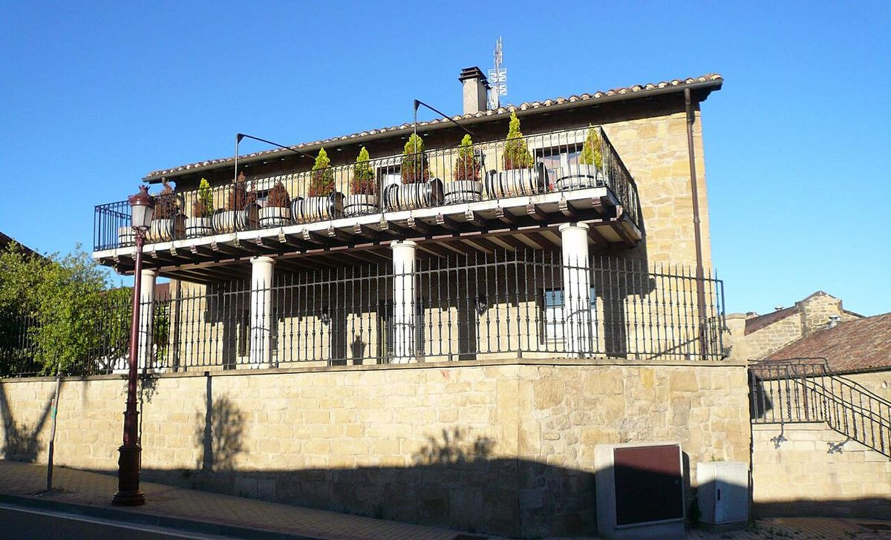

ESPUMOSO
Bodega familiar de Haro fundada en 1932, conocida por elaborar y criar sus vinos íntegramente en madera y por contar con tonelería propia.

Bodegas Muga fue fundada en 1932 por Isaac Muga Martínez y Aurora Caño, ambos procedentes de familias vinculadas al vino en Haro. En 1971 la bodega se trasladó a su sede actual en el Barrio de la Estación, en un edificio de piedra junto a las vías del tren. La empresa sigue siendo familiar y la gestionan descendientes de los fundadores.
La casa trabaja con viñedos propios y de viticultores de confianza situados en las faldas de los Montes Obarenes, en el entorno de Haro, en la zona de Rioja Alta. Las variedades principales son las tradicionales de la región: Tempranillo, Garnacha, Mazuelo (Cariñena) y Graciano, además de Viura y Malvasía para los blancos.
El rasgo más característico de Muga es el uso de la madera en todas las fases: fermenta en tinos de roble, cría en barricas y fudres y dispone de tonelería propia, donde sus toneleros construyen y reparan barricas de roble de distintas procedencias. También mantiene prácticas tradicionales como la clarificación con clara de huevo y los trasiegos por gravedad.
Su gama abarca desde rosados y blancos jóvenes hasta reservas y grandes reservas, como Prado Enea, junto a vinos de corte más moderno como Torre Muga y Aro, y espumosos bajo la marca Conde de Haro. El estilo de la casa combina la estructura del Rioja clásico con una fruta bien definida.
Ofrece visitas guiadas a la bodega y a su tonelería, con cata, previa reserva.